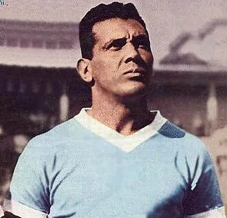

Photo source ↗Unknown author · Public domain
The profile
Obdulio Varela
Obdulio Varela was a Uruguayan midfielder and captain whose leadership became a defining part of the national team’s identity.
Varela played much of his club football for Peñarol. A forceful midfielder, he set the tone for Uruguay through tackling, organisation and leadership.
Varela captained Uruguay to the 1950 World Cup title. His side came from behind to beat host Brazil 2–1 in the decisive match at the Maracanã.
1950Brazil
Champion
Group D Uruguay8 : 0Bolivia
- Oscar MIGUEZ14′
- Ernesto VIDAL18′
- Juan SCHIAFFINO23′
- Oscar MIGUEZ40′
- Oscar MIGUEZ51′
- Juan SCHIAFFINO54′
- Julio PEREZ83′
- Alcides GHIGGIA87′
Uruguayhome
Starting lineup
- Roque MASPOLI
- Matias GONZALEZ
- Eusebio TEJERA
- Obdulio VARELA
- Victor RODRIGUEZ ANDRADE
- Juan Carlos GONZALEZ
- Alcides GHIGGIA
- Juan SCHIAFFINO
- Ernesto VIDAL
- Oscar MIGUEZ
- Julio PEREZ
Substitutions
- No substitutions
Boliviaaway
Starting lineup
- Eduardo GUTIERREZ
- Alberto ACHA
- Jose BUSTAMANTE-NAVA
- Leonardo FERREL
- Antonio GRECCO
- Antonio VALENCIA
- Victor ALGARANAZ
- Roberto CAPPARELLI
- Benigno GUTIERREZ
- Benjamin MALDONADO
- Victor UGARTE
Substitutions
- No substitutions
Final pool Spain2 : 2Uruguay
- Estanislao BASORA37′
- Estanislao BASORA39′
- Alcides GHIGGIA29′
- Obdulio VARELA73′
Spainhome
Starting lineup
- Antonio RAMALLETS
- GABRIEL ALONSO
- GONZALVO II
- Jose PARRA
- GONZALVO III
- Antonio PUCHADES
- Estanislao BASORA
- GAINZA
- Silvestre IGOA
- Luis MOLOWNY
- ZARRA
Substitutions
- No substitutions
Uruguayaway
Starting lineup
- Roque MASPOLI
- Matias GONZALEZ
- Eusebio TEJERA
- Obdulio VARELA
- Victor RODRIGUEZ ANDRADE
- Juan Carlos GONZALEZ
- Alcides GHIGGIA
- Juan SCHIAFFINO
- Ernesto VIDAL
- Oscar MIGUEZ
- Julio PEREZ
Substitutions
- No substitutions
Final pool Uruguay3 : 2Sweden
- Alcides GHIGGIA39′
- Oscar MIGUEZ77′
- Oscar MIGUEZ85′
- Karl-Erik PALMER5′
- Stig SUNDQVIST40′
Uruguayhome
Starting lineup
- Anibal PAZ
- Schubert GAMBETTA
- Matias GONZALEZ
- Eusebio TEJERA
- Obdulio VARELA
- Victor RODRIGUEZ ANDRADE
- Alcides GHIGGIA
- Juan SCHIAFFINO
- Ernesto VIDAL
- Oscar MIGUEZ
- Julio PEREZ
Substitutions
- No substitutions
Swedenaway
Starting lineup
- Kalle SVENSSON
- Sune ANDERSSON
- Gunnar JOHANSSON II
- Erik NILSSON
- Lennart SAMUELSSON
- Ingvar GARD
- Hans JEPPSSON
- Egon JONSSON
- Bror MELLBERG
- Karl-Erik PALMER
- Stig SUNDQVIST
Substitutions
- No substitutions
Final pool · decisive match Uruguay2 : 1Brazil
- Juan SCHIAFFINO66′
- Alcides GHIGGIA79′
- FRIACA47′
Uruguayhome
Starting lineup
- Roque MASPOLI
- Matias GONZALEZ
- Eusebio TEJERA
- Schubert GAMBETTA
- Obdulio VARELA
- Victor RODRIGUEZ ANDRADE
- Alcides GHIGGIA
- Oscar MIGUEZ
- Juan SCHIAFFINO
- Ruben MORAN
- Julio PEREZ
Substitutions
- No substitutions
Brazilaway
Starting lineup
- BARBOSA
- AUGUSTO
- JUVENAL
- BAUER
- BIGODE
- DANILO ALVIM
- ZIZINHO
- ADEMIR
- FRIACA
- JAIR
- CHICO
Substitutions
- No substitutions
1954Switzerland
Fourth place
Group C Uruguay2 : 0Czechoslovakia
- Oscar MIGUEZ71′
- Juan SCHIAFFINO84′
Uruguayhome
Starting lineup
- Roque MASPOLI
- Jose SANTAMARIA
- William MARTINEZ
- Victor RODRIGUEZ ANDRADE
- Obdulio VARELA
- Luis CRUZ
- Julio ABBADIE
- Oscar MIGUEZ
- Juan SCHIAFFINO
- Carlos BORGES
- Javier AMBROIS
Substitutions
- No substitutions
Czechoslovakiaaway
Starting lineup
- Theodor REIMANN
- Frantisek SAFRANEK
- Ladislav NOVAK
- Jiri TRNKA
- Jiri HLEDIK
- Jan HERTL
- Vladislav HLAVACEK
- Otto HEMELE
- Emil PAZICKY
- Jiri PESEK
- Ladislav KACANI
Substitutions
- No substitutions
Group C Uruguay7 : 0Scotland
- Carlos BORGES17′
- Oscar MIGUEZ30′
- Carlos BORGES47′
- Julio ABBADIE54′
- Carlos BORGES57′
- Oscar MIGUEZ83′
- Julio ABBADIE85′
Uruguayhome
Starting lineup
- Roque MASPOLI
- Jose SANTAMARIA
- William MARTINEZ
- Victor RODRIGUEZ ANDRADE
- Obdulio VARELA
- Luis CRUZ
- Julio ABBADIE
- Oscar MIGUEZ
- Juan SCHIAFFINO
- Carlos BORGES
- Javier AMBROIS
Substitutions
- No substitutions
Scotlandaway
Starting lineup
- Fred MARTIN
- Willie CUNNINGHAM
- Jock AIRD
- Jimmy DAVIDSON
- Tommy DOCHERTY
- Doug COWIE
- John McKENZIE
- Allan BROWN
- Neil MOCHAN
- Willie FERNIE
- Willie ORMOND
Substitutions
- No substitutions
Quarter-final Uruguay4 : 2England
- Carlos BORGES5′
- Obdulio VARELA39′
- Juan SCHIAFFINO46′
- Javier AMBROIS78′
- Nat LOFTHOUSE16′
- Tom FINNEY67′
Uruguayhome
Starting lineup
- Roque MASPOLI
- Jose SANTAMARIA
- William MARTINEZ
- Victor RODRIGUEZ ANDRADE
- Obdulio VARELA
- Luis CRUZ
- Julio ABBADIE
- Oscar MIGUEZ
- Juan SCHIAFFINO
- Carlos BORGES
- Javier AMBROIS
Substitutions
- No substitutions
Englandaway
Starting lineup
- Gilbert MERRICK
- Ron STANIFORTH
- Roger BYRNE
- Billy WRIGHT
- Jimmy DICKINSON
- Bill McGARRY
- Stanley MATTHEWS
- Ivor BROADIS
- Nat LOFTHOUSE
- Tom FINNEY
- Dennis WILSHAW
Substitutions
- No substitutions